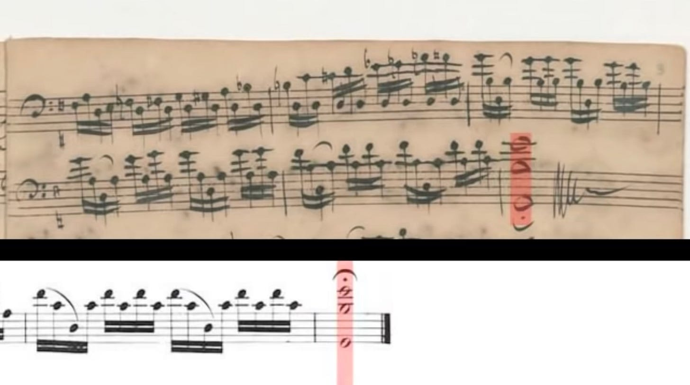

纪念这一天，自学音乐以来完成第一首完整的练习曲：Bach Cello Suite No.1: Prelude。
花了一天改进识谱的方法论，后面的半首 prelude 被用于测试这个方法，结果一天就学完了。不仅看见就能奏出来（延迟几秒种），而且最后不知不觉全记住了。
不是凭记忆和努力记住的，而是因为喜欢，凭感觉。这音乐已经自然进到了我的心里，如果漏掉或者奏错了音，节奏不对，我立即就知道好像不对劲。很多大师演奏这些曲目，我都能直觉感觉到有哪里不大对，对于我自己这种初学者，就更不用说了。
我只能说，这曲子妙极了。听起来非常妙，奏起来却像是练习曲一样简单。本来是自己奏出来的曲子，却仿佛经过了神秘的变幻，有些音不像是自己奏出来的，而像是在梦里听见的。仿佛不是我在演奏音乐，而是音乐在推动着我，我只是毫不费力地在享受。
当然，乐器还不能是真的大提琴，而是 LinnStrument。大提琴会紧跟而上！
世上无难事，只怕有方法。感谢 LinnStrument 的设计者 Roger Linn，使得这不可能的事情变成了可能。感谢巴赫写出这有魔力的乐谱。感谢马友友提供 YouTube 视频里的参照音乐。
